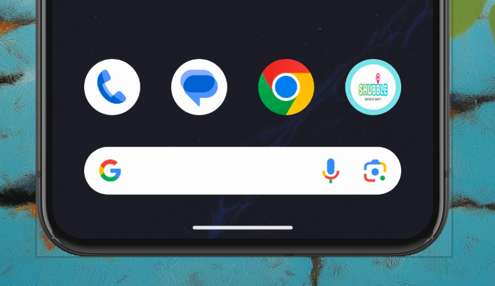
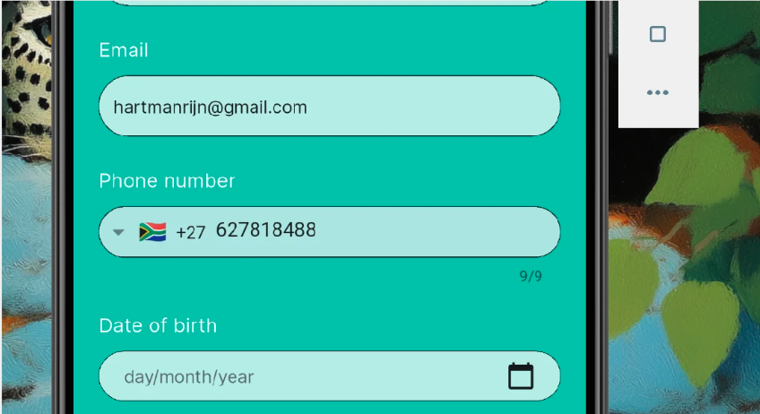
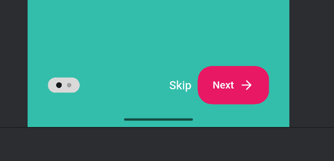
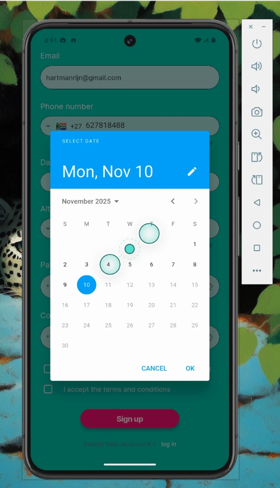
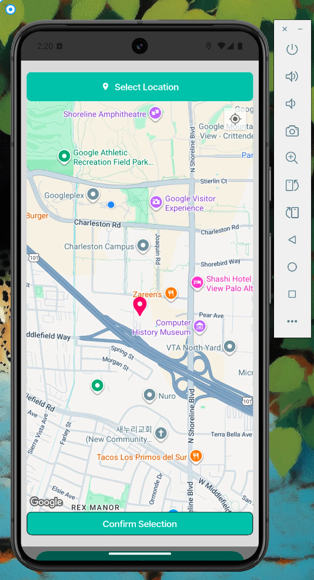
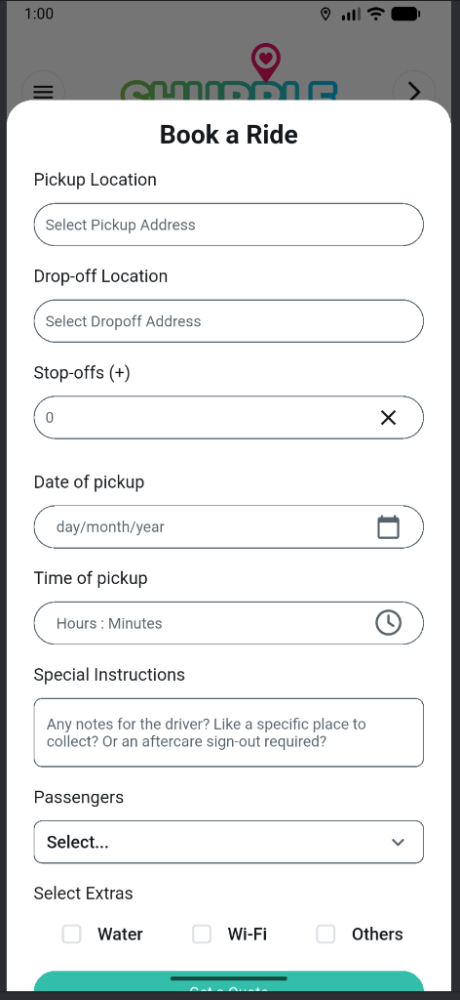
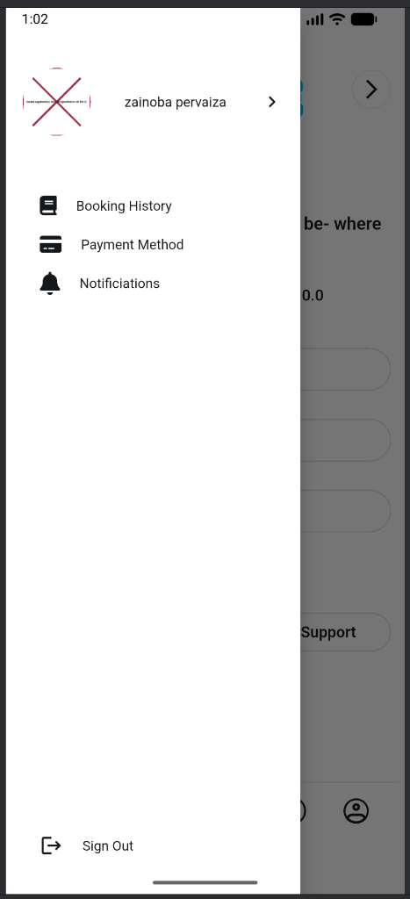
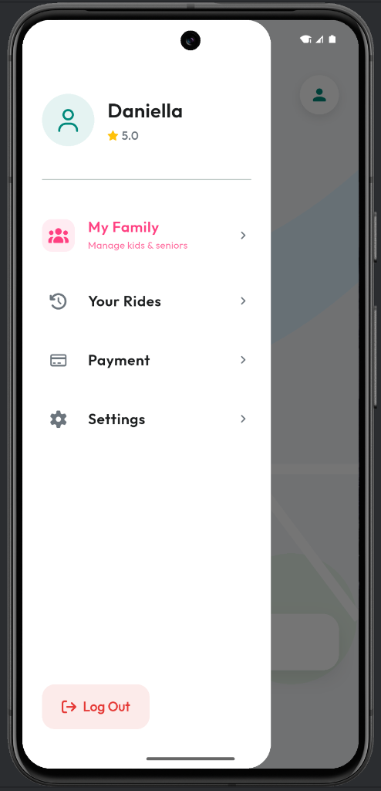

Shubble Android Audit
Prepared for Daniella Louw
Executive Summary
I've performed a "Basics-Check" on the Android version of the Shubble app. While the core logic is functional, I've identified several key areas where the user experience creates friction. Additionally, the iOS build is currently paused due to an Apple ID sign-in requirement.
My Observation: The current interface feels significantly dated—several generations behind modern consumer apps like Uber or Bolt. To command a premium price and trust, the app needs a visual overhaul to match the quality of the service itself.
1. Android Basics-Check Findings
🚨 Priority Findings
- Confusing Terminology: The app asks users to "Register as Client". This is internal dev-speak. It should clearly say "Sign Up as Rider" or "Passenger" to avoid confusion.
- T&Cs Checkbox: The text isn't clickable, which is a small but annoying usability issue.
- Inconsistent Errors: The error messages feel a bit raw (e.g., lowercase "please select your birthdate"). I'll polish these up to sound more professional.
- Typos: Spotted a "Nexts" button on the startup screen. Easy fix.
🛑 Booking Flow Analysis

Features to Retain: Despite the layout issues, the underlying logic for Pickup Time, Special Instructions, and Extras is actually quite solid. I plan to keep this logic but break it down into a multi-step "Wizard" to make it feel less overwhelming.
2. UI/UX Overhaul Needed
I've pinpointed specific areas where we can elevate the design from "Utility" to "Premium Experience".
App Icon
Problem: The current icon is low-res and gets lost on a busy home screen.
My Solution: I'll design a crisp, vector-based icon using our new "Safety Teal". It needs to look trustworthy and instantly recognizable.
Phone Number Input
Problem: It's just a raw text field right now. It's easy to type a wrong number.
My Solution: I'll implement a proper formatter with a country flag selector. It looks better and prevents bad data from getting into the system.
Onboarding Navigation
Problem: The buttons jump around between screens. It breaks the user's flow.
My Solution: I'm introducing a sticky footer. The "Next" button will always be in the same thumb-friendly spot, no matter the screen size.
Date Picker
Problem: The calendar widget is clunky for selecting a birth year (too many taps).
My Solution: I'll swap this for a native scroll-wheel (Spinner). It's faster, cleaner, and what iOS/Android users expect.
Location Selection
Problem: Dragging a pin is frustrating when you know exactly where you want to go.
My Solution: I'll integrate Google Places Autocomplete. Users can just type "Cape Town Airport" and get the exact spot instantly.
Design System Strategy
Problem: There is fundamentally no Design System in place. It’s not just about corner radii—the entire visual language is fragmented. Every screen feels slightly different, which makes the app feel disjointed and "cheap" rather than premium.
My Solution: I will build a strict, "Plug-and-Play" Design System (tokens for color, type, spacing) independently. I'll hand over a locked-down style package that the external team just needs to implement, removing any need for them to make design choices.
3. iOS Status: BLOCKED
daniellalouw81@gmail.com), which is blocking the final
payment. Let's hop on a quick call tomorrow (when our time zones align) to sort this out. I want to
get the iOS build running on my phone this weekend.
I can't proceed with iPhone testing until we clear this payment hurdle.
4. Vision vs. Reality
A side-by-side look at where we are vs. where I want to take this.
Booking Flow
LEGACY (CURRENT)
Cluttered, long scroll, hidden CTA.
VISION (FUTURE)
Step-by-step wizard reduces cognitive load and ensures data accuracy.
Sidebar Navigation
LEGACY (CURRENT)
Empty, wasted space, broken assets.
VISION (FUTURE)
Rich profile, gamification stats, easy access.
5. Vision Prototype Demo
A walkthrough of the new high-fidelity prototype interaction.
6. Strategic Recommendation
December On-Site Sprint (Somerset West)
I want to leverage my upcoming visit for a dedicated 2-week on-site sprint. Goal: Sit down with the operations team, review the current app side-by-side, and lock in the product direction together.